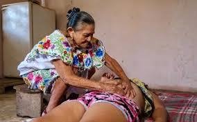
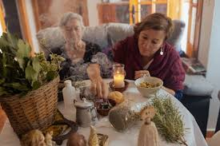

Métodos de los abuelos
En los tiempos de 1990 antes de la inauguración de la clínica, había personas de dicho nombre "PARTERAS". Así las llamaban ya que solo podían ser mujeres las cuales ayudaban a las amas de casa en labor de parto. Ellas eran las que daban atención médica. En otra ocasión también hubo o hay en estos tiempos las famosas curanderas o chamanes (Estas personas tenían estereotipos de brujos o personas pactadas con la oscuridad). Estas personas aún están por todos lados ya que también encontramos a las familias que optan por naturistas, medicamentos contrarios a los farmacéuticos.


¿SABIAS QUE..?
Que en elpueblño de santa cruz tepexpan esdtos oficios de las parteras, los curanderos y de remedios naturaliztas an pasado de generacion en generacio?. Asi es esto lleva mucho tiempo, como las enfernedades creadas por lospobladores como el aire el cual es un mal energetico esto con lleva los sintomas de dolor de cabeza, mareos, ascos, y dolor de oido o de estomago, tambien el mal de ojo, y muchas mas enfermedades, gracias a esto muchas personas tomado este oficio y hata la fecha son muy pocas personas con esta tradicion.
Sus Medicamentos...
Ellos ocupaban muchas hierbas medicinales las cuales ocupaban para malestares por ejemplo:
- Manzanilla: la cual quita dolor estomacal y ayuda a dormir
- Romero: Era ocupado para el crecimiento capilar, y para los dias de mestruacion
- Hierba buena: Comentaban que es muy bueno para el mal aliento, dolor abdominal y dolor estomacal
- Jengibre: Les ayudaba a aliviar los sintomas de las nauseas y el dolor del estomago
- lavanda: Promueve la relajacion y reduce el estres